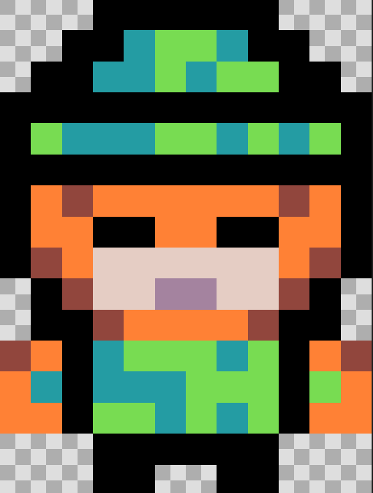 | Pertsonaia nagusia | Hemen ikus dezakegu gure pertsonai nagusia, eiztari bat da, ez da ikusten, baino eskopeta bat dauke, eskopeta horrekin hiltzen ditu etsaiak eta saguxarra, eta pertsonai hau player motakoa da. |
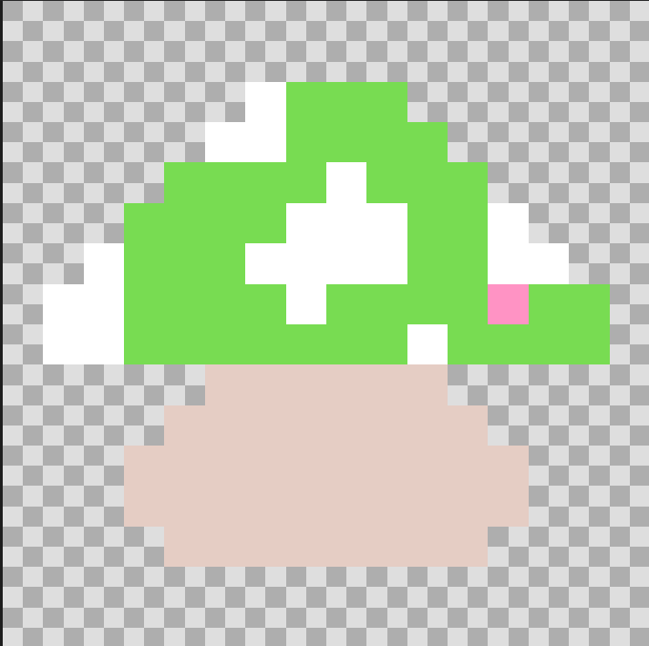 | perretxikua | Perretxiku hau agertzen da lehenengo munduan eta bigarrenean, objektu hau egiten duena da, pertsonaia nagusiari bizitzak geitu, hau da pertsonai nagusia hori ikutzerakoan, bizitza bat geihago eukiko du. |
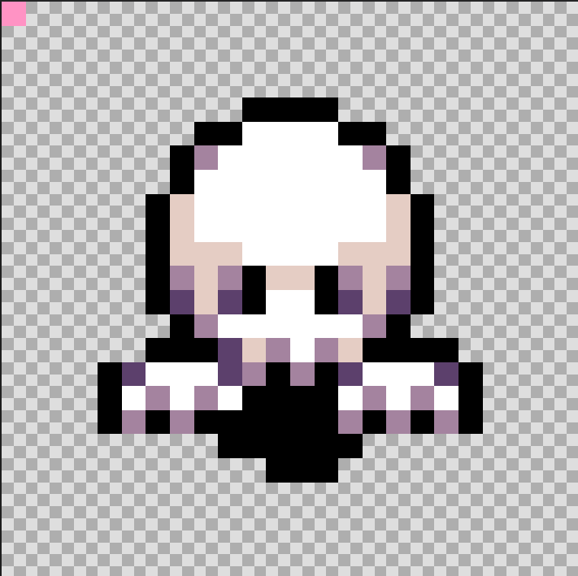 | Mamua | Hau lehenengo etsaia da, eta hiru daude lehenengo mapan, hau egiten duena da zu hiltzen sailatu, eta hauek hiltzerakoan puntuak ematen dizu eta esan dudan bezala, hau etsai motakoa da. |
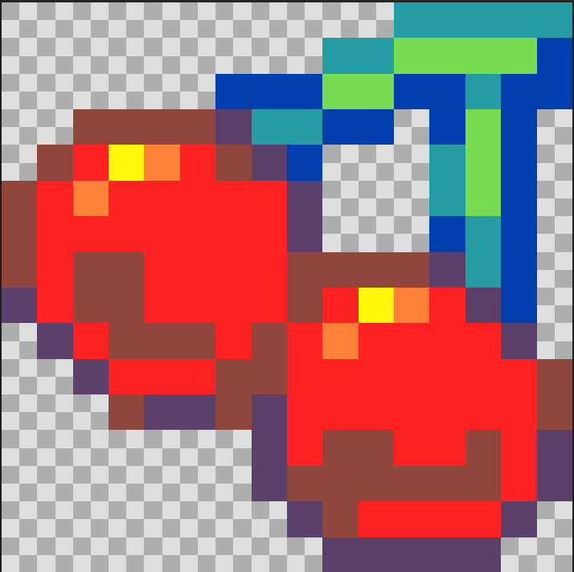 | Gereziak | Hau da lehen munduan puntuazio guztia lortzeko hartu behar dugun objektuak. |
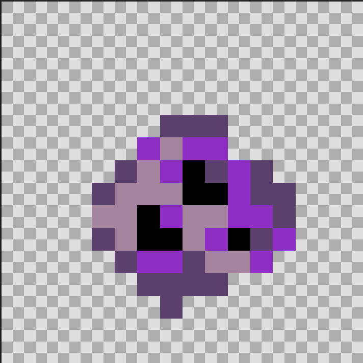 | Projektilak | Objektu hau da pertsonaia nagusia botatzen duen projektilak bere eskopetaren balak direla simulatzeko, eta bakarrik erabili daitezke lehenengo eta hirugarren mundutan. |
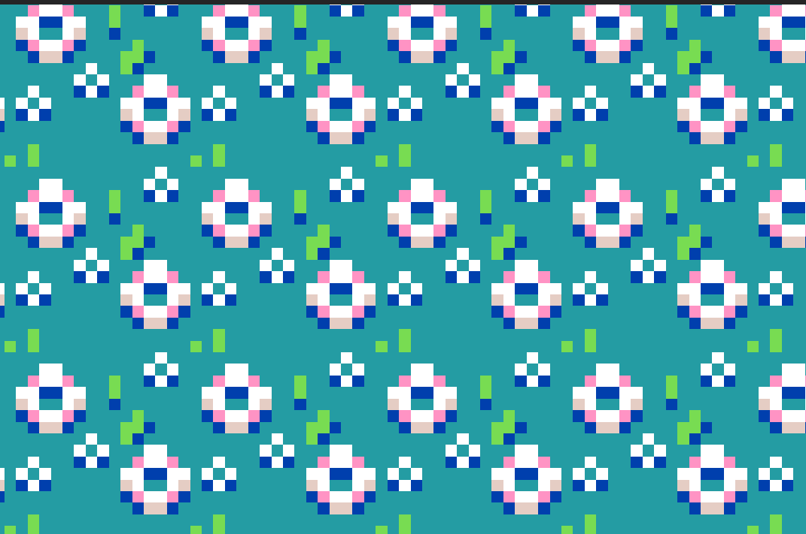 | Teletransporte blokea (1) | Teletransportadore hau agertzzen da lehenengo mapan, eta balio du pertsonaia nagusia lehenengo mundutik bigarrenera, baino ez du balio bakarrik ikutzearekin, lehenengo lortu beharko dituzu 7 puntu, lortzen direnak mamuak hiltzen eta gereziak hartzen. |
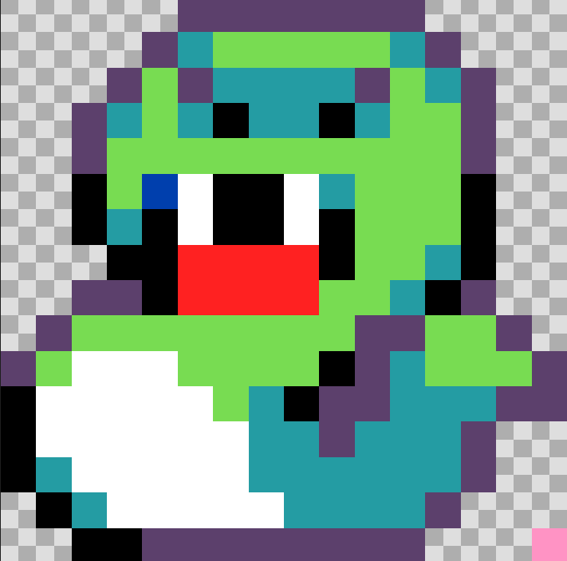 | Sugea | Hau Bigarren etsaia da, bat dago bigarren munduan, hau egiten duena da zu hiltzen sailatu, eta hau ezingo duzu hil, bigarren munduan muniziorik gabe geratzen zarelako. Esan dudan bezala, hau etsai motakoa da. |
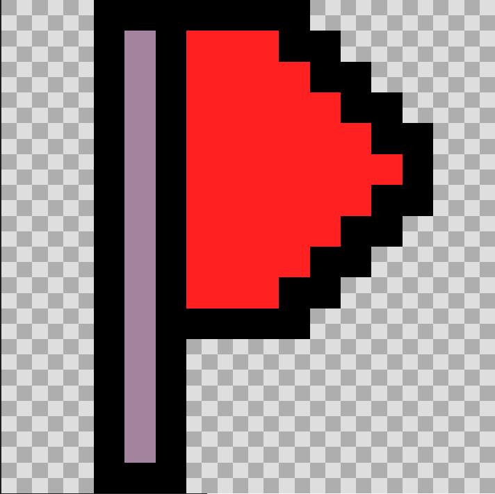 | Bandera (1) | Bandera hau agertzen da bigarren mapan, eta pertsonai nagusia hau ikutzerakoan, aldatzen da beste bandera berde batera eta hori esan nahi du hiltzerakoan hor agertuko dela, edozein modutan hiltzen bada hor agertuko da. |
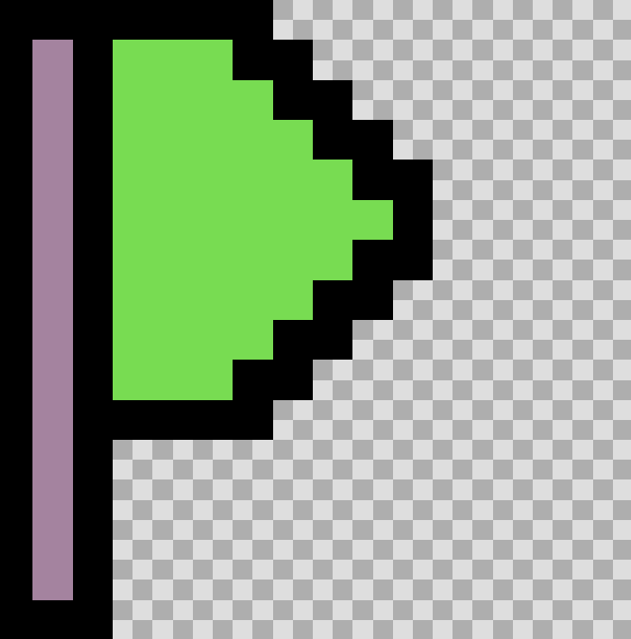 | Bandera(2) | Bandera hau agertzen da bigarren mapan eta agertzen da bakarrik pertsonaia nagusia bandera gorriak ikutzen dituenean, eta hau esan nahi du bere puntua gordeta dagola, eta hiltzerakoan hor agertuko dela. |
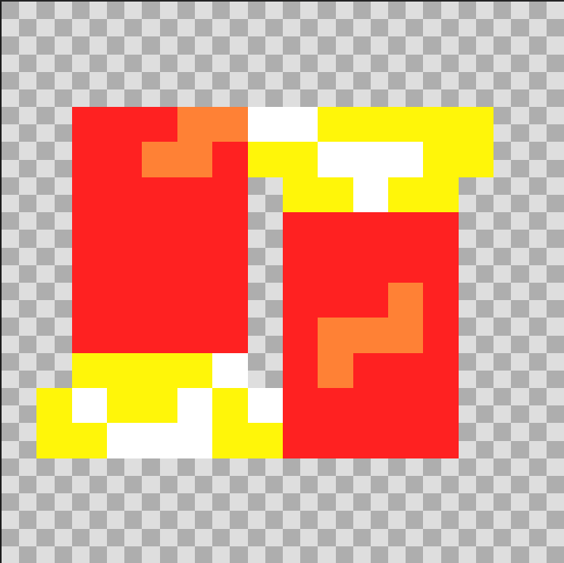 | Balak | Objektu hau agertzen da bigarren mapan, eta pertsonaia nagusia hau ikutzerakoan hurrengo mundura juteko bloke batzuk aldatuko dira beste bloke batera eta bloke hailekin ahal zea jun hurrengo mundura. |
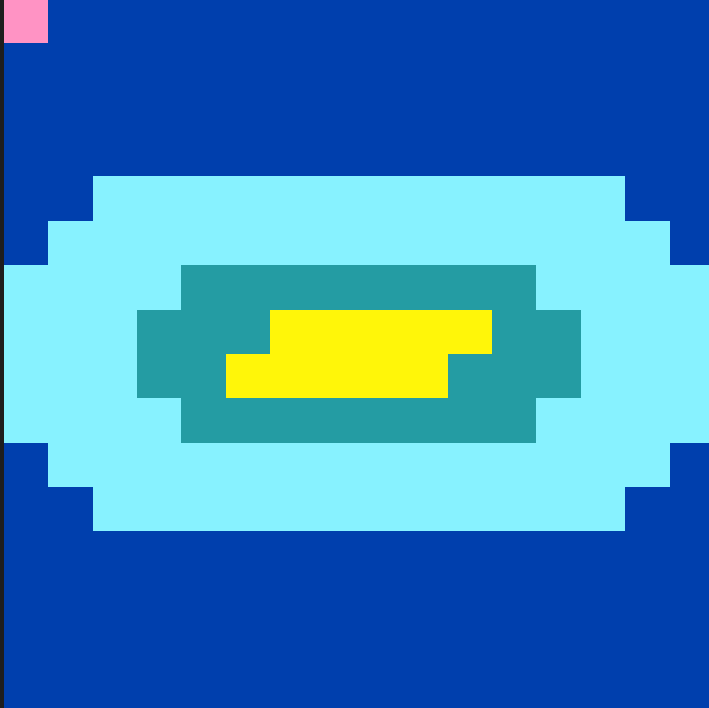 | Teletransporte blokea (2) | Bloke hau da agertzen dena balak ikutzerakoan, bloke hau bakarrik agertzen da bigarren munduan, eta goiko partean, hurrengo mundura juteko pertsonaia nagusia ukitu behar du eta eramango dio azkeneko mundura. |
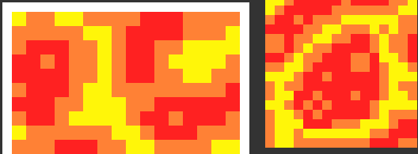 | Laba | Bloke hau agertzen da bigarren munduan, baino ez da agertzen asko, bakarrik agertzen da salto egin behar dituzun plataforma batzuen beran, eta egiten duena da, pertsonaia nagusia ikutzerakoan bizitza bat galtzen du eta ikutu duen azkeneko gordepuntura joaten da. |
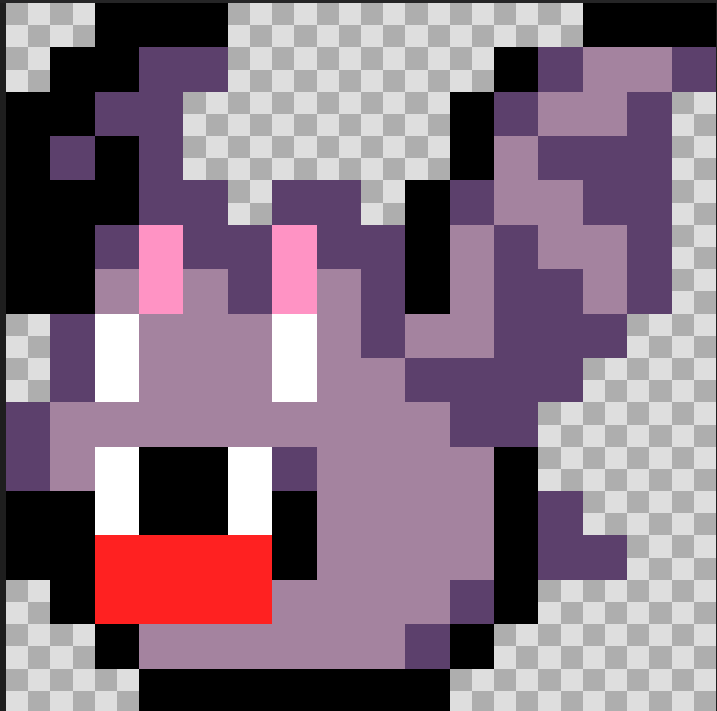 | Saguxarra | Hau da azkeneko etsaia eta agertzen da azkeneko mapan, saguxar erraldoi bat da, saguxar hau egin nahi duena da zu hil, baina kasu honetan, zuk ahalko duzu hil, baina ez da izango erraza, hau da, bizitza barra haundi bat eukiko du, baino hiltzerakoan jokua irabazten duzu, eta hau da boss motakoa. |